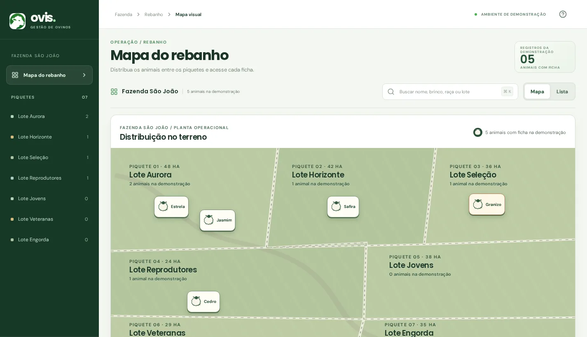

Qual o lote da Estrela?
Abra o mapa ou a lista e encontre o animal pelo nome, brinco ou raça.
Experimente mover a Estrela no mapa do rebanho. O lote muda na ficha, onde você também encontra peso, sanidade e reprodução. É uma demonstração, com dados simulados.

Se a Estrela muda de lote, você precisa encontrar a ficha dela sem refazer o caminho. Na prévia do Ovis, os animais aparecem por lote, com identificação e registros reunidos na mesma tela.
Matriz ativa · Lote Aurora
Veja o que está pendente, agendado ou já foi concluído nesta prévia.
Veja taxa de prenhez, ganho médio e crias por matriz com dados simulados.
Uma visão que começa pelo rebanho e chega ao detalhe sem trocar de contexto.
Abra o mapa ou a lista e encontre o animal pelo nome, brinco ou raça.
Na ficha, consulte peso, genealogia e eventos de sanidade e reprodução da demonstração.
Arraste o marcador para outro lote ou escolha o destino na ficha. A mudança nesta prévia fica só no seu navegador.
O mapa demonstrativo permite mover os animais entre piquetes, abrir suas fichas e desfazer uma movimentação. É a maneira mais direta de sentir como o desktop pode ajudar na gestão do rebanho.
Abrir o mapa do rebanho Prévia interativa. Nenhuma mudança é enviada ao app mobile.Digite a quantidade e compare os preços da tabela enviada pela equipe para Basic, Plus e Pro. Esta simulação não indica um plano ideal nem inicia uma assinatura.
Valores informados na tabela enviada pela equipe Ovis. Simulação de preço, não contratação.
No pagamento anual, o total dos 12 meses tem 15% de desconto.
As faixas de 250 e 500 aparecem com asterisco na tabela original, sem explicação das condições. Aqui são interpretadas como até 250 e até 500 ovinos; confirme a regra comercial antes de contratar. Acima de 500 ovinos, não há preço informado. As diferenças de recursos entre Basic, Plus e Pro ainda não foram fornecidas.
O Ovis apresentado aqui é um protótipo com dados de demonstração. Você pode abrir fichas e mover animais no desktop, mas as alterações ficam apenas neste navegador. Ainda não há conta, sincronização com o app mobile ou assinatura ativa nesta versão.
Os preços são uma referência da tabela fornecida pela equipe. O site não recebe pagamentos nem ativa planos.
Abrir a demonstração